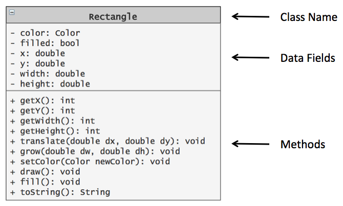

Classes and objects are the two main aspects of object oriented programming. A class defines a new data type, whereas an object is an instance of a particular clas. Objects store data belonging to the object in fields defined by its class. Objects also have functionality that can be activated by calling the methods that belong to its class.
A UML diagram is a graphical summary of the data and methods in a class. Below is the UML diagram for the Retangle class from the Simple Java Graphics[^1] library written by Cay S. Horstmann.

Identify one example of a data field given in the above UML diagram for the Rectangle class.
What is the variable name of the data field?
What is the data type of the data field?
Identify one example of a Rectangle class method that takes no arguments.
Identify one example of a Rectangle class method that takes one or more parameters.
Imagine that you have a code segment that creates a rectangle (rect1) with the following values for each of its fields:
Give the code to do each of the following to rect1
rect1 to color Violet.rect1.rect1 by 100 units and the height by 200 units.rect1.What values do you think will be returned by part d?
Terminology Note
A method should do one thing, either provide access to object data values or mutate data values. Never both!